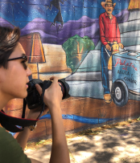

There Goes Garfield:
Can this historic neighborhood hang on to its identity? What you will discover: the first settlements in Phoenix, the history of the Garfield neighborhood, what’s happening with gentrification, landmarks in Garfield, and hotspots in Garfield.
By The Cronkite High School Media Innovation Camp Team
Questions:
What is a motion book?
A form of animation combining elements of print comic books and graphics. Individual panels contain sound effects, animation and unique artwork.
Why we chose a motion book?
We wanted to bring the story of a historic neighborhood alive by using a format that combines the joy of a comic book with the liveliness of animation.
Quotes:
The future is a hard thing to say and every time we paint images of it, it never really happens. There’s been so many projections and it’s just so hard to tell the economic factors that go on...
- Dana Johnson
This is a really interesting ecosystem we’re developing here so anything that I can do to contribute to that it’s awesome because it’s only going to make Arizona and our neighbors to the south in the Sonoran Desert even stronger because it’s part of our economy.
- Doug Robson
My family and i are currently being displaced or “termination of tenancy” due to a “renovation” here in Garfield.
- Robert Carrasco

Educate the community and to continue to empower people to fight against any injustices that are occurring and that includes gentrification
- Blanca Collazo
Phoenix Garfield History:
The Hohokam people lived in the area that eventually became Phoenix for over 2,000 years, developing an extensive system of irrigation canals to make the desert area arable. Some of these canals later became used for the modern Arizona Canal and the Hayden-Rhodes Aqueduct. The Hohokam eventually abandoned the area between 1300 and 1450 due to floods and drought, and the Akimel O'odham settled here, as well as the Yavapai and eventually the Maricopa.
Phoenix itself began with a Confederate veteran named Jack Swilling, who traveled there in the 1850s to seek wealth. When he found the abandoned river valley, he thought it would be suitable for farming, and he built a series of canals following those of the old Native American System.
The land was sold in 1870, and a church opened in 1871, as well as a store and soon a school and a courtroom. Phoenix outgrew its form of government by 1881 and incorporated, and the population experienced high growth with the railroads in the 1880s.
By 1950, Phoenix was home to 100,000 people in the city and thousands in surrounding areas, and it continued to attract new business. In 2007, it became the second-fastest growing metro area in the US after Las Vegas with a growth of 24%, but it was one of the hardest hit areas during the subprime mortgage crisis.
Garfield’s Statistics:
By 2020, it's forecasted that Phoenix will become the 4th most populous city in the US, and by 2030, the US Census Bureau estimates its population will reach 2.2 million with a metropolitan area that's home to 6.3 million.
Motion Book Team:
Amber Clark
Using effects to help create the Motion book and learning how to use many other programs. For example, Photoshop, Artlist, Trello, and MyBalsamiq were all used while creating this project.
Gentrification and revitalization occurs in many neighborhood and communities around the world. Many families are being push out of their homes causing high rate of homelessness. Being able to help create this project shows me another perspective.
Adrienne
Creating the sketched version of photographs through photoshop, as well as finding/cutting audio and inputting on Madfire.
This is important to me because of the skills utilized throughout the creation of the motion book to help animate the story.
Cristabela
Learning how to utilize Photoshop, Balsamiq, and mastering the art taking and editing photos.
This project is important to me because of the difference that we are making for the people of Garfield. We are their voice and it is up to us for them to be heard. It’s been incredible learning about journalism and all the work that happens behind the scenes. The fact that we have the power to save families from not having a home, is such an honor, especially in today’s society.
Elizabeth
Using Photoshop to pixelate photographs and creating the mock of the motion book on Balsamiq and the mock of the website page on Google Slides and animating on Madefire
This project is meaningful because of the impact it will have on neighborhoods everywhere and exposing others to the problems and benefits that arise when gentrification takes place. Being able to learn new skills and techniques to enhance photographs is a tool I used to animate the story and bring it to life.
Uriel
Took photographs and edited them in photoshop to use in the motionbook. Helped create a rough draft outline motionbook in Balsamiq.
This is important to me because it opened my eyes on things I don't necessarily notice in my daily life. I learned that I take many things for granted. This has sparked my passion for photography.